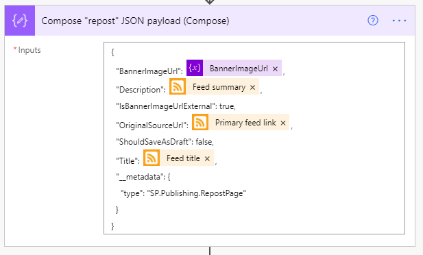

A somewhat common complaint I've heard from organizations I've worked with is that folks within the organization frequently are unaware of press releases, blogs, or other information the organization is publicly sharing. In fact, I'm guilty of it as well. On numerous occasions, I've gone to a coworker for some quick troubleshooting only to be told "I wrote a blog for that".
Now that Microsoft Viva Connections is here, I've been putting a lot of energy into my company's SharePoint home site and trying to come up with ways to break down the information silo's we've just naturally accrued over the years.
Fortunately, it turned out that our company blog already had an RSS feed setup, which opened up some opportunities, one of which was to create a flow in Power Automate that automatically creates a SharePoint "News Link" in our home site whenever a new blog post is published to our public site.
So, with this blog, we'll walk through the steps used to accomplish that feat.
As with any flow, we need something to kick things off. I was afraid that this was going to be the biggest technical challenge but, thankfully, it turns out that there is a trigger purpose built to do exactly what we need: the When a feed item is published trigger!
As you can see, the configuration here is dead simple. You simply provide it the URL to an RSS feed and select either the PublishDate or UpdatedOn values. We'll stick with the default PublishDate setting so that we're only being triggered by brand new articles.
So, with this configuration, our flow will be executed anytime a new article is published to the XBOX news RSS feed.
Once triggered, seemingly regardless of the specific RSS feeds schema, a standardized JSON object is returned to the flow that gives us most of what we need.
{
"body": {
"id": "https://news.xbox.com/en-us/?p=152438",
"title": "Wasteland 3: The Battle of Steeltown Releasing June 3 ",
"primaryLink": "https://news.xbox.com/en-us/2021/04/15/wasteland-3-the-battle-of-steeltown-releasing-june-3/",
"links": [
"https://news.xbox.com/en-us/2021/04/15/wasteland-3-the-battle-of-steeltown-releasing-june-3/"
],
"updatedOn": "0001-01-01 00:00:00Z",
"publishDate": "2021-04-15 14:00:00Z",
"summary": "The Wasteland 3 team here at inXile is very excited to announce the first narrative expansion for Wasteland 3: The Battle of Steeltown will be releasing June 3. Since the game’s launch last August, we’ve been working on adding new features, quality of life changes, and fixing bugs and improving game stability and performance. But […]",
"copyright": "",
"categories": []
}
}
Even better, this data gets turned into variables we can access through the Dynamic Content selector in Power Automate.
One thing we don't get is any sort of image to show, which is a bummer because without them, all of our News Links would end up looking like the below image.
Thankfully, SharePoint has a handy-dandy little service hidden away that can help.
If you ever created a new "News Link", you'll know that you simply give SharePoint the URL to your article and it auto-magically snags the title, summary and a thumbnail image to use. If you open up your browser's developer tools, you can see that SharePoint calls this _api/SP.Publishing.EmbedService/EmbedData endpoint, passing along an encoded URL and some additional query strings. It turns out that this is what handles all that 'magic' and it's also something we can leverage for our own ends here!
Thanks to the output of our trigger, we know the URL of the blog post we're working with, and we can access it through the variable. However, we do need to make sure that the URL is in the right format, so we'll create our own variable to make it so.
We'll call it PrimaryLinkEncoded, make it a string, and initialize its value using the following expression: concat('%27',encodeUriComponent(triggerOutputs()?['body/primaryLink']),'%27')
Once run, we'll end up with an encoded URL surrounded by apostrophes, which is what the EmbedData service expects.
Now that we have that we just need to call the aforementioned service using the Send an HTTP request to SharePoint action.
We'll be making a GET request to the root of our SharePoint site. Technically, this could be any SharePoint site you have access to, but since we'll be posting news articles to our home site, we'll just stick with that.
For the Uri configuration, we're calling the previously mentioned service with a few required query string parameters like so: _api/SP.Publishing.EmbedService/EmbedData?url=@{variables('PrimaryLinkEncoded')}&version=1&bannerImageUrl=true
We're passing along the encoded URL we created in the last step, specifying version 1 (which is required, despite their only being one version) and we're asking for the bannerImageUrl to be included (otherwise we're not getting )
We only need to include one header, the accept header, with a value of application/json;odata.metadata=minimal.
Finally, to make things a bit easier to use in a moment, we'll capture the output of this request into a variable using the Initialize Variable action again, like so.
We're creating a new string variable named BannerImageUrl and we're setting its value using the following expression: outputs('Get_Thumbnail')?['body']?['d']?['ThumbnailUrl']
Now that we've got just about everything we can get, we need to put into the format that SharePoint expects when creating a News Link item, so it's time to prepare our payload using the Compose action.

It's a fairly simply and (mostly) self-explanatory bit of JSON, so we won't dwell on it much. Below is the exact JSON used in the above screenshot.
{
"BannerImageUrl": @{variables('BannerImageUrl')},
"Description": @{triggerOutputs()?['body/summary']},
"IsBannerImageUrlExternal": true,
"OriginalSourceUrl": @{triggerOutputs()?['body/primaryLink']},
"ShouldSaveAsDraft": false,
"Title": @{triggerOutputs()?['body/title']},
"__metadata": {
"type": "SP.Publishing.RepostPage"
}
}
The only thing left to do now is make our post, which will do by using another Send an HTTP request to SharePoint action, shown below.
This time, we'll be making a POST to the _api/sitepages/pages/reposts endpoint (which is what SharePoint does when you post a news link).
Our headers are only slightly more involved. Our endpoint is expecting to receive and will return JSON, so we need to include the appropriate headers...
{
"accept": "application/json",
"content-type": "application/json;odata=verbose;charset=utf-8"
}
Last but not least, we need to include the Output of the compose action we created in the previous step so that SharePoint knows what we're sharing.
Once that's all setup, go ahead and save.
At this point, you're done developing. The only thing left to do is wait, really. Once new items are published to the RSS feed, you'll eventually see them start showing up in your News web parts!